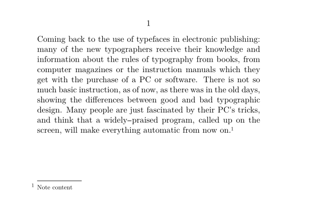

Contents
Summary
The instances of
\start
note
... \stop
note
are used for notes
Instances
| \startfootnote ... \stopfootnote | |
| \startendnote ... \stopendnote |
Settings instance
Settings instance:assignment
| \startNOTE[...=...,...] ... \stopNOTE | |
| title | text |
| bookmark | text |
| list | text |
| reference | reference |
| Option | Explanation |
|---|---|
| Note: it may make more sense to use note if you want to use an assignment list, because the actual text inside the environment will be ignored in this variant. | |
Description
Examples
Example 1
-
\setuppapersize[A7,landscape] \starttext \input zapf\startfootnote[fn1]Note content\stopfootnote \stoptext
- 